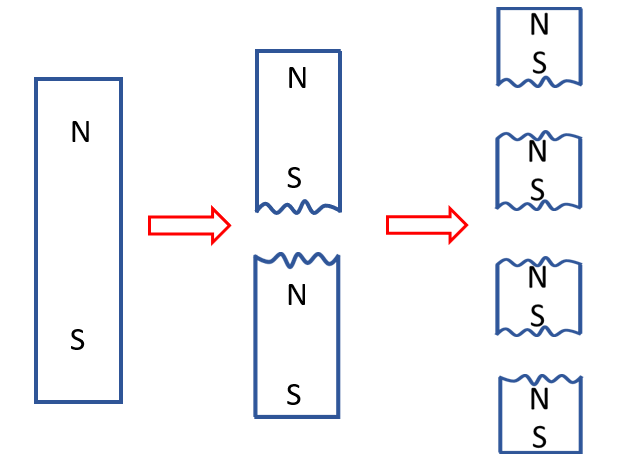

HOME BLOG EBOOKS ABOUT CONTACT SHOP
In electricity, there are positive charges and negative charges and they can remain isolated from each other. But in case of Magnetism, there is no such thing as positive pole and a negative pole. Sure, every magnet has a North and a south pole, but they always exist in pairs, i.e. Magnetic monopoles do not exist, at least we haven’t found any till date. Not convinced yet? Try breaking a bar magnet into 2 pieces, each new piece will behave as a separate magnet with its own north and south poles. You can do this as much times as you want, but the result will be the same, you will smaller and smaller pieces of magnets, but never a separate north piece and a separate south piece. There are some theory floating around about this behavior of magnets, but exact reason is still largely a mystery.

So in reality, there is no source or sink in case of magnets unlike electric fields. The magnetic field lines may seem like they originate at the north pole and terminate at the south pole, but all they are doing is to circulate back on themselves, forming continuous loops.
An important inference can be made from this behavior of magnets, that “The magnetic flux through a closed surface is always zero”. This result is called the Gauss’s law for Magnetism. Connected the dots yet? The reasoning is simple. Because magnetic poles don’t exist in isolation, any field lines that enter a volume will inevitably exit from the opposite side, so as to complete the loop, therefore the net flux will be zero.
Mathematically, this law can be put as,